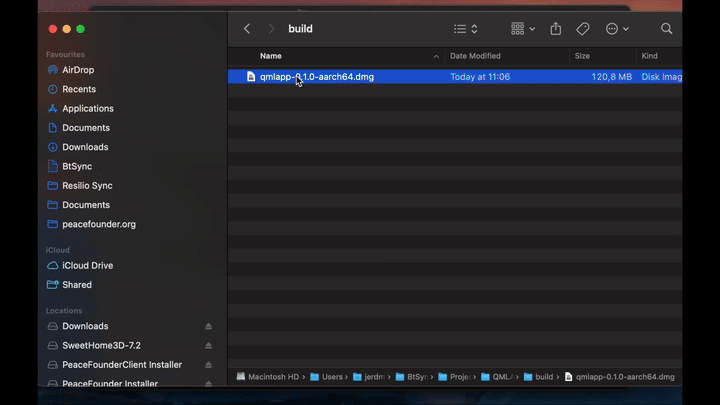

DMG
DMG is the standard disk image format for distributing macOS applications. AppBundler builds .dmg images with a fully open-source toolchain, so they can be created and signed on any platform without Xcode.

Build pipeline
The standard Apple workflow signs the app bundle with codesign, packs it into a disk image with hdiutil, signs the image, submits it for notarization with notarytool, and attaches the notarization ticket with stapler:
MyApp.app → codesign → hdiutil → codesign → notarytool → staplerThese tools are available only on macOS. AppBundler uses open-source equivalents instead:
MyApp.app → rcodesign → xorriso → dmg → rcodesign notarizeHere dmg comes from libdmg-hfsplus, and rcodesign handles both code signing and notarization. All tools are redistributable and cross-compiled with BinaryBuilder, so DMG images can be built and signed from Linux and Windows as well as macOS.
Package contents
Before creating the image, AppBundler assembles the MyApp.app bundle with the following layout:
| Path | Purpose |
|---|---|
Contents/MacOS/MyApp | Application launcher |
Contents/Libraries/main | Binary stub reference |
Contents/Info.plist | Application metadata |
Contents/Resources/icon.icns | Application icon |
../DS_Store | Controls the installer's appearance |
Sandboxing and permissions are configured through Entitlements.plist, which is embedded in the launcher's signature during code signing.
The launcher must be a native binary, since macOS code signing and entitlements cannot be applied to scripts.
Code signing
Apple issues code signing certificates only to members of the Apple Developer Program, which costs €99/year as of September 2026. Distribution outside the Mac App Store requires a Developer ID Application certificate, and only the account holder can create one. A standalone certificate.pfx can be produced on any platform with OpenSSL:
- Generate a private key and a certificate signing request:
openssl genrsa -out developer_id.key 2048
openssl req -new -key developer_id.key -out developer_id.csr \
-subj "/emailAddress=you@example.com/CN=Your Name/C=LV"In the Apple Developer portal, create a new Developer ID Application certificate, upload
developer_id.csr, and download the resulting.cerfile.Combine the certificate and key into a password-protected
.pfx:
openssl x509 -inform DER -in developerID_application.cer -out developer_id.pem
openssl pkcs12 -export -inkey developer_id.key -in developer_id.pem -out dmg/certificate.pfxNotarization additionally requires an App Store Connect API key, created in App Store Connect under Users and Access → Integrations.
Notarization
macOS codesigning has an additional requirement beyond certificate signing: Apple requires all distributed applications to be notarized. Notarization means submitting the bundle to Apple's servers, where it is checked for proper structure and the absence of malware. Two settings must be enabled in LocalPreferences.toml for a bundle to pass notarization:
dmg.shallow_signing = false
dmg.hardened_runtime = trueNote on shallow vs. deep signing: Deep signing is disabled by default because it takes considerable time for Julia applications and currently tends to fail with
rcodesigndeep signing. Unfortunately,codesign --verify --deep --verbose=4 myapp.apppasses even with shallow signing, so the only reliable way to verify that deep signing is correct is to submit the bundle to Apple's notary service and inspect the response. Budget some time for this when setting up notarization for the first time.
Self-signing
For testing, AppBundler can generate a self-signed certificate at dmg/certificate.pfx:
AppBundler.install_dmg_certificate("dmg/certificate.pfx")The generated password is printed to stdout. Pass it to the build with --password=mypassword. For a quick local build, use --selfsign instead: it signs with a throwaway certificate and ignores dmg/certificate.pfx.
Apple notarizes only packages signed with a Developer ID certificate, so self-signed builds cannot be notarized. Gatekeeper blocks them by default, and they must be installed as described below.
Installing self-signed packages
Gatekeeper blocks applications that are not signed with a Developer ID certificate and notarized. Users must explicitly allow them, as described in Apple's guide to opening apps from an unknown developer. To automate this, AppBundler provides recipes/dmg/bootstrap.sh. It mounts the DMG, copies the app to /Applications, and removes the quarantine attribute:
bootstrap.sh myapp.dmgThis also enables one-line web installs: a hosted install.sh can download the DMG and bootstrap.sh and run bootstrap.sh myapp.dmg, invoked with e.g.:
curl -fsSL https://example.com/install.sh | shAPI
dmg_config = DMG(project; selfsign = true)
bundle(dmg_config, dmg_archive) do app_stage
# install files into app_stage
endAppBundler.DMG — Type
DMG([project]; arch, compress, windowed, kwargs...)Create a DMG configuration object for macOS application packaging.
When project is provided, configuration files are searched in project, then project/meta, then the built-in recipes directory. Application parameters (APP_NAME, APP_VERSION, etc.) are read from project/Project.toml, and packaging defaults (selfsign, compression, etc.) are read from project/LocalPreferences.toml. Without project, only the built-in recipes and the active project's LocalPreferences.toml are used.
Arguments
project: Path to a project directory containingProject.toml, optionalLocalPreferences.toml, and optionalmeta/dmg/overrides
Keyword Arguments
prefix = joinpath(dirname(@__DIR__), "recipes"): Base directory or array of directories to search for configuration files in sequential ordericon = get_path(prefix, ["dmg/icon.icns", "dmg/icon.png", "icon.icns"]): Path to application icon (.icns or .png)info_config = get_path(prefix, "dmg/Info.plist"): Path to Info.plist template with app metadatacommand::Cmd: Command launching the application; defaults todmg.commandpreference. Its executable and escaped arguments are exposed to the templates asCOMMANDentitlements = get_path(prefix, "dmg/Entitlements.plist"): Path to entitlements file for code signingdsstore = get_path(prefix, ["dmg/DS_Store.toml", "dmg/DS_Store"]): Path to DS_Store file or TOML template for Finder window appearanceselfsign: Iftrue, generate a temporary self-signed certificate instead of usingpfx_cert; defaults toselfsignpreferencepfx_cert = get_path(prefix, "dmg/certificate.pfx"): Path to code signing certificateshallow_signing: Iftrue, sign only the top-level bundle rather than all nested binaries; defaults todmg.shallow_signingpreferencehardened_runtime: Iftrue, enable hardened runtime during signing (required for notarization); defaults todmg.hardened_runtimepreferencesandboxed_runtime: Iftrue, enable the App Sandbox entitlement; defaults todmg.sandboxed_runtimepreferencemain_launcher: Path to the Julia entry-point script. When set, a native redirect launcher is installed atContents/MacOS/<app_name>and the script itself atContents/Libraries/main; resolved from prefix using the bundler predicate; omitted if not foundhfsplus = false: Iftrue, use HFS+ filesystem when building the disk image otherwise uses ISOwindowed: Iftrue, the application runs without a console window; defaults towindowedpreferencecompress: Iftrue, pack the staging directory into a.dmgdisk image; defaults tocompresspreferencecompression: Compression algorithm for the disk image (:lzma,:bzip2,:zlib, or:lzfse); defaults todmg.compressionpreferencearch = Sys.ARCH: Target CPU architecturepredicate: Bundler predicate used for hook selection; defaults tobundlerpreferenceparameters: Dictionary of parameters for Mustache template rendering. Whenprojectis provided, pre-populated fromProject.tomland preferences:APP_NAME,APP_DISPLAY_NAME,APP_VERSION,BUILD_NUMBER,APP_SUMMARY,APP_DESCRIPTION,BUNDLE_IDENTIFIER,PUBLISHER_DISPLAY_NAME,MODULE_NAME(Julia-based bundles only),WINDOWED, andSANDBOXED_RUNTIME
Examples
DMG() # default recipes only
DMG(app_dir) # project with Project.toml parameters
DMG(app_dir; hardened_runtime = false) # project with keyword overrides
DMG(; prefix = ["custom/", "recipes/"]) # explicit search path